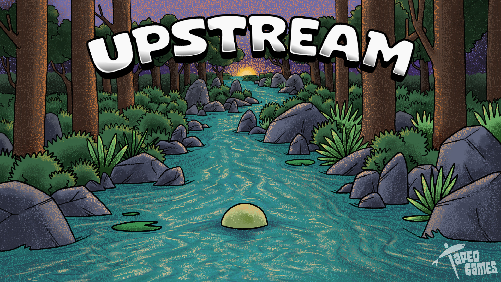

What is Upstream?
Upstream is a 3D single-player web-based video game designed to nurture computational thinking in children.
The game features different levels where players can witness the development and growth of Darwin, our protagonist.
It's a puzzle-type game where players navigate through the environment, strategically dodging and maneuvering around obstacles to reach a final goal, symbolizing the home of these amphibians.

The main objective of the game is to guide Darwin along his journey back home. Each level presents a scenario full of obstacles and challenges that the player must overcome. These challenges are not only physical, but also cognitive, as players must devise strategies to solve problems and make decisions to advance through the game.
Available in itch.io!
This game was developed using Unity Engine and C#.
It was published on itch.io and it is available for PC and Android devices.
Upstream is divided into 3 phases, each introducing a new stage in Darwin's life. It begins as a tadpole with simple mechanics and straightforward levels.
In the second phase, new movement mechanics are introduced, and the difficulty of the levels increases, along with the size and strength of the character, as well as the objects it can grab.
Finally, in the last phase, Darwin has fully grown, and the latest mechanics are introduced. He is at his maximum level, and the difficulty of the levels is also at its peak.
Some mechanics